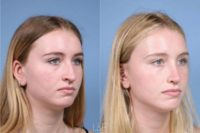
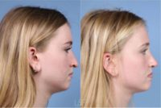

Name: L&P Aesthetics
Display name: L&P Aesthetics
Mission: Welcome to your home for everything aesthetics. Our medical spa is dedicated to bringing high-end nonsurgical treatments to the San Francisco Bay Area through our office in Palo Alto, CA. Directed by 2 double board-certified facial plastic surgeons, L&P Aesthetics is your destination for discreet, results-driven care that will help you look your best without slowing you down.
Medical director: Drs. Lieberman & Parikh
Website: https://www.fortheface.com
Office hours: Mon: 8:00am – 6:00pm
Tue: 8:00am – 6:00pm
Wed: 8:00am – 6:00pm
Thu: 8:00am – 6:00pm
Fri: 9:00am – 5:00pm
Phone: (650) 735-8166
Twilio phone: (650) 735-8166
Address: 105 Addison Ave., 326 Village Lane, Palo Alto, California, USA, 94301
City: Palo Alto
State: California
Country code: US
Postal code: 94301
Phone: +16503273232
Neighborhood: University South
Country: USA
GPS coordinates on map: 37.4398812,-122.1577196
Treatments:
- Microdermabrasion
- Botox
- Collagen Injection
- Cheek Lift
- Neck Lift
- Thread Lift
- Juvederm
- Facelift
- Lower Facelift
- SMAS Facelift
- Restylane
- Contour Thread Lift
- Radiesse
- Rhinoplasty
- Sculptra
- Cheek Augmentation
- Tattoo Removal
- Laser Hair Removal
- Laser Resurfacing
- Chemical Peel
- Glycolic Peel
- TCA Peel
- Salicylic Peel
- Dermabrasion
- Facial Fat Transfer
- YAG Laser
- Eyelid Surgery
- Brow Lift
- IPL
- Hair Transplant
- Facial
- Nonsurgical Facelift
- Mohs Surgery
- Dysport
- Nonsurgical Nose Job
- Chin Implant
- Ear Surgery
- Retin-A
- Sinus Surgery
- Latisse
- Double Eyelid Surgery
- Lip Fillers
- Chin Liposuction
- Mole Removal
- Skin Rejuvenation
- Mini Facelift
- Revision Rhinoplasty
- Scar Removal
- Lip Lift
- Jessner Peel
- Genioplasty
- Septoplasty
- Skin Tightening
- Hair Loss Treatment
- Laser Peel
- Dermal Fillers
- Fractional Laser
- CO2 Laser
- Facial Reconstructive Surgery
- Cleft Lip And Palate Repair
- Earlobe Repair
- Belotero
- CoolSculpting
- Ultherapy
- Lip Implants
- Buccal Fat Removal
- Lip Surgery
- Asian Rhinoplasty
- African American Rhinoplasty
- Liquid Facelift
- Lip Reduction
- Vampire Facelift
- Voluma
- FUE Hair Transplant
- NeoGraft
- PicoWay
- Facial Feminization Surgery
- Volbella
- Forehead Reduction
- MACS Facelift
- Deep Plane Facelift
- Restylane Silk
- Nonsurgical Neck Lift
- Microneedling
- PRP for Hair Loss
- Facelift Revision
- Eyebrow Transplant
- Kybella
- Restylane Lyft
- Skintyte
- Hand Rejuvenation
- Biocorneum
- Restylane Refyne
- Restylane Defyne
- PRP Injections
- Dermapen
- Cyst Removal
- Microneedling RF
RealSelf Info
Profile created: Mar 27, 2018
Profile modified: Jan 10, 2023
Business type: Medical Spa
Review count: 75
Rating: 4.8
Rating time spent: 5
Rating answered questions: 5
Rating bedside manner: 5
Rating after care: 5
Rating payment process: 5
Rating wait times: 5
Rating courtesy: 5
Rating responsiveness: 5
RealSelf’s PRO: Yes
Realself network status: candidate
Medical director: Drs. Lieberman & Parikh
Special Offers
Heading
Start Time / End Time
Detail
Treatments
Complimentary Laser Hair Removal Consultation
Dec 16, 2020 /
May 17, 2033
Receive a complimentary, virtual laser hair removal consultation from the laser hair removal specialist at L&P Aesthetics.
Specific treatments
Doctors
Name: Sachin S. Parikh, MD
Statement: Dr. Sachin S. Parikh is a dual board-certified and fellowship-trained facial plastic and reconstructive surgeon serving the San Francisco Bay Area with an state-of-the-art clinic & surgical center in Palo Alto, CA. He is one of a select group of surgeons trained extensively in both facial plastic surgery and head and neck surgery, giving him a unique understanding of the face and its underlying structures.
As a medical director of L&P Aesthetics, Dr. Parikh focuses exclusively on cosmetic and reconstructive surgery, including minimally invasive and open surgical techniques of the face, neck, eyelids, nose, and ears. He also specializes in hair restoration procedures.
Dr. Parikh is a member of the American Academy of Facial Plastic and Reconstructive Surgery and one of only 43 surgeons per year to perform an advanced fellowship in facial plastic surgery. Working alongside Dr. David M. Lieberman, he uses his unique expertise to create exceptional plastic surgery results for Bay Area men and women.
His practice with Dr. Lieberman, L&P Aesthetics, has 2 locations in the San Francisco Bay Area, in Palo Alto and Los Gatos. They take a team approach to perform the full range of facial aesthetic surgeries, including rhinoplasty, lip lift (and corner lip lift), their own L&P Signature Deep Plane Facelift and Neck Lift, brow lift, blepharoplasty, chin augmentation, and more.
Began aesthetic medicine in: 2010
Rating: 4.9
Name: David M. Lieberman, MD
Statement: Dr. Lieberman, dual-board certified and; fellowship trained, forms a unique two-physician partnership with Dr. Sachin Parikh. They specialize exclusively in facial plastic surgery, nonsurgical facial rejuvenation and hair restoration and strive to provide the best possible result for each patient.
Dr. Lieberman is the Co-Founder and Co-Medical Director of L&P Aesthetics. L&P Aesthetics has 2 locations in the San Francisco Bay Area, in Palo Alto and Los Gatos. Dr. David M. Lieberman and Dr. Sachin S. Parikh are double board-certified plastic surgeons who take a team approach to perform the full range of facial aesthetic surgeries, including rhinoplasty, lip lift (and corner lip lift), their own L&P Signature Deep Plane Facelift and Neck Lift, brow lift, blepharoplasty, chin augmentation, and more.
Began aesthetic medicine in: 2010
Rating: 4.8
Name: Steven Curti, MD
Statement: Dr. Curti is a Board Certified Otolaryngologist who is fellowship-trained and experienced in Facial Plastic Surgery - both reconstructive and cosmetic. During his fellowship with Dr. Lieberman and Dr. Parikh at L&P Aesthetics, he learned the L&P Signature techniques of “Structural Artistry.” For facelifts and necklifts, these techniques systematically address the key structures of a patient’s underlying anatomy, restoring them to their original youthful positions. Building on this foundation, Dr. Curti personalizes his artistic adjustment of every patient’s unique features, to deliver a balanced, beautiful appearance that looks completely natural. He joined L&P Aesthetics as Medical Director of the Los Gatos office and medical spa in October 2022, and embodies the patient-centric, high-integrity approach of the practice.
Began aesthetic medicine in: 2020
Staff
Name: Colleen Shimamoto
Position: Aesthetician
Years experience: 20
Biography: Colleen is a passionate and dedicated Aesthetician who is sensitive to helping others resolve their skin care concerns. Through Skincare by Colleen, she will customize a treatment regimen that is focused on a results oriented approach. Her passion for skincare stems from her own battle with cystic acne as a teenager. This adds an empathetic, sensitive and caring approach to her treatments.
Colleen has worked with top skin care manufacturers as the Director of Education, where she was able to work with chemists on the formulation of new products and treatments worldwide. Her travels and education have allowed her to learn from the best in the world and share her expertise with you.
With over a decade of experience, her passion, commitment and genuine nature make her a perfect addition to the practice.
Name: Mandi Lonergan
Position: Registered Nurse
Can answer: 1
Years experience: 12
Biography: Mandi has been a registered nurse for over 12 years and has extensive
training in the head and neck anatomy. She began her nursing career in
the post-surgical unit of Stanford Hospital where she worked with both
Drs. Lieberman and Parikh while they were Otolaryngology Head & Neck
Surgery residents. After five years, she moved with her family to
Santa Rosa where she worked in the intensive care and peri-operative
units. Now that Mandi is back on the Peninsula, she has become a
well-sought after aesthetics nurse specializing in lip injections and
the liquid lift and is excited to be working with Drs. Lieberman and
Parikh again. She is passionate about enhancing a person’s natural
look with safe injections and treatments.
Name: Heidi Keesis
Position: Physician Assistant
Years experience: 15
Biography: Heidi is a highly sought after master injector and joins L&P Aesthetics as the first Master Physician Assistant. Her superior injection skills along with her aesthetic expertise and safe techniques brought Heidi to become an Allergan Medical Institute (AMI) trainer. She has traveled the country training MDs, RNs and fellow PAs in advanced injection techniques that yield gorgeous, natural results. As a graduate of Samuel Merritt University, Heidi has spent the past 15 years in aesthetic medicine and witnessed many evolutions in the products and procedures. She loves staying abreast of the most effective treatments, but what she loves most is seeing the smile and boost in confidence people exude after receiving treatments from her.
Name: Ginger Orozco
Position: Nurse Injector
Can answer: 1
Years experience: 30
Biography: Born in Hawaii and raised in the Bay Area, Ginger received her Bachelor of Science in Nursing Degree from San Francisco State University and graduated with high honors. Ginger has spent over 20 years in the aesthetics industry and has worked with many plastic surgeons and dermatologists during her nursing career. However her true passion remains in the field of medical aesthetics.
Ginger loves enhancing a person’s natural beauty through a number of nonsurgical techniques including ablative laser technology to reverse the signs of sun damage, Ultherapy to tighten and contour skin and injections to smooth fine lines and wrinkles. Ginger is known throughout the Bay Area as a specialist in the newest laser procedures and as a compassionate & talented aesthetic provider.
Name: Eliana Ramirez
Position: Cosmetologist
Years experience: 10
Biography: Eliana has been working in the medical field for ten years. She first worked for an internal medicine clinic as the front desk coordinator and then at Stanford hospital in the patient financial clearance department. She now holds two bachelors degrees in nursing and health sciences and has a cosmetologist license. Eliana admires the leadership at L&P and enjoys being around the hardworking L&P team.
Practice's answers
Question
Answer Header & Date
Answer Snippet
Gull wing or bull horn, scarring query
lip lift
Feb 27, 2023
Gull-wing lip lifts place the incision (and scar) right at the vermillion border which is the junction of the red and white lip. The bullhorn technique places the incision (and scar) in the junction between the nose and face, just at the base of the nose in the natural shadows. It is true that the traditional bull horn lip lift preferentially lifts the center of the lip more than the corners so people who have thinning of the lips toward the corners can sometimes get an exaggerated central...
Which is better - incision in the hairline or just below the sideburn for lower facelift?
Facelift incisions
Feb 7, 2023
Traditional incisions that were placed behind the temporal tuft in the hair line hide well, but tend to pull the sideburn into the scalp and can give a very "operated" look. Most current surgical techniques use an incision that follows the sideburn a few hair follicles in. While these can be visible upon close inspection, with a good closure technique involving no/minimal tension and proper suture placement the scars can be almost invisible. This is a question that you should ask your...
Lip lift scar at 6 months post-op, will it improve from here?
Scar maturation
Feb 7, 2023
It takes around a year for scars to completely mature. Until that time the scar can change. From what I can see in the pictures, there is still some redness and a raised component to the scar that may continue to improve. I would speak to your surgeon about scar management but if you are not currently using silicon gel or patches and good sun protection I would start there. Beyond those, dermabrasion or lasers all have some efficacy with camouflaging scars.
Juvederm in marionette lines 5 years ago - do I have filler migration?
Laxity/buccal fat
Feb 7, 2023
Although an examination would tell more, it is unlikely that the areas in the photograph is filler migration. It appears more likely that you are showing early signs of aging with some laxity and possibly buccal fat pad protrusion. Although injections can somewhat mask these issues I would recommend seeing a board certified facial plastic surgeon or plastic surgeon who can preform an in person exam and offer you options for treatment.
What type of lip lift would lift the two peaks of my upper lip and the corners of my mouth?
Corner lip lift
Jan 24, 2023
A corner lip lift is used to increase the red lip show on the corner of the lip. The traditional subnasal lip lift is great at lifting the central lip but due to the limits of where the incision can be placed, it preferentially lifts the central lip over the corners. The subnasal lip lift can be designed to take more laterally but it still has difficulty lifting the true corner. Many times I recommend a corner lip lift in combination with a subnasal lip lift or in isolation. I believe this...
Latest Before And After Photos
-
-
24 Year Old Ms. Treated With Nose Plastic Surgery Procedure, Septoplasty Image With Dr. L&P Aesthetics
-

-
Dr L&P Aesthetics 23 Year Old Spouse Treated With Surgery On The Nose, Septoplasty
-

-
18 Year Old Female Treated With Surgery On Nose, Septoplasty Image By Dr L&P Aesthetics
Last updated on 12/03/2023